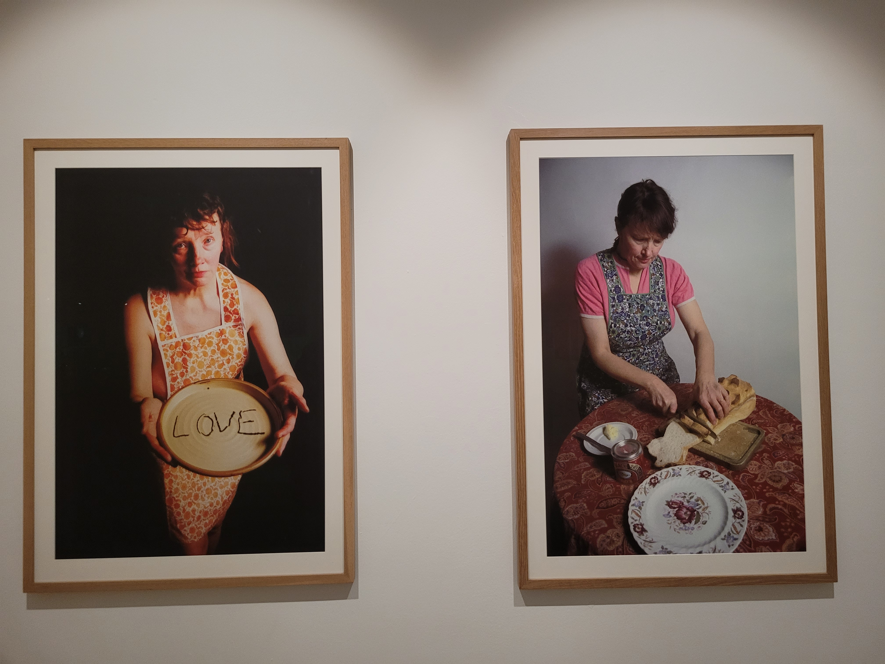
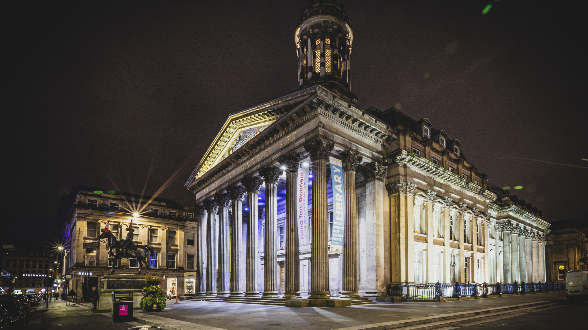
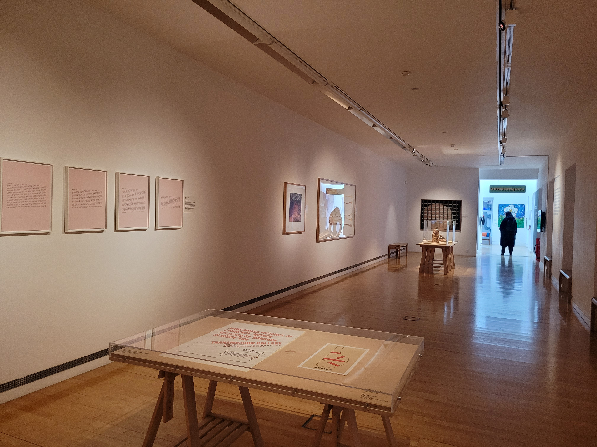
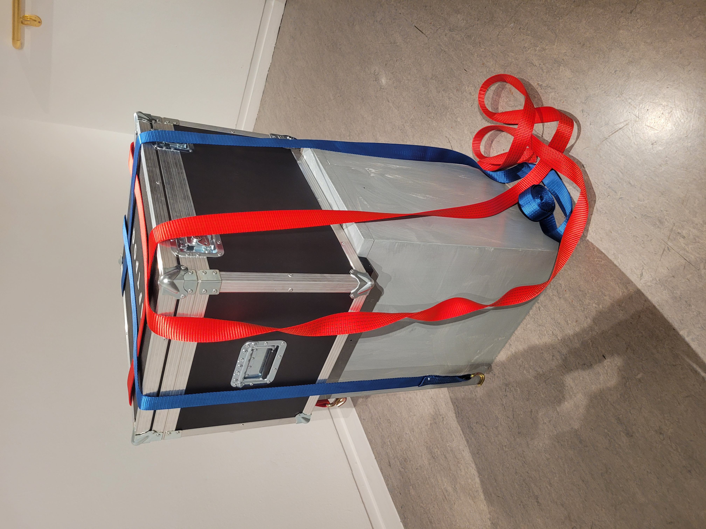
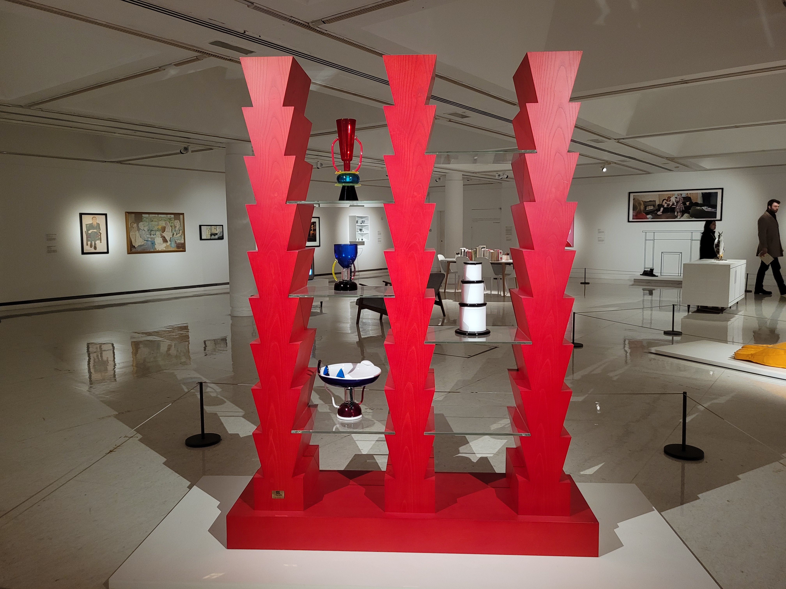

<!DOCTYPE html>
<html lang="en">
<head>
    <meta charset="UTF-8">
    <meta name="viewport" content="width=device-width, initial-scale=1.0">
    <title>Document</title>
</head>
<body>
    
</body>
</html>
  <title>GREAT WEEKEND IN GLASGOW</title>
  <link rel="stylesheet" href="styles.css">
  <br>
  <ul>
    <li><a href="index.html">Home</a></li>
    <li><a href="burrell.html">Burrell</a></li>
    <li><a href="galleryofmodernart.html">Gallery of Modern Art</a></li>
    <li><a href="riverside.html">Riverside</a></li>
    <li><a href="stmungos.html">St.Mungos</a></li>
    <li><a href="kelvingrove.html">Kelvingrove Museum</a></li>
  </ul>
  <div class="row">
    <div class="column">
      
      
      
    </div>
    <div class="column">
      
      
    </div>
    <div class="column">
      
      
      
    </div>
  
<br>
  
  <p><strong>HISTORY</strong>
Opened in 1996 as the Gallery of Modern Art, the building itself contains a varied and interesting history.
 Originally built in 1778 as the townhouse for William Cunningham, a tobacco merchant who made his fortune 
 from the slave trade. It was sold to the Royal Bank of Scotland in 1817 and became Glasgow’s Royal Exchange,
  during which architect David Hamilton added the iconic Corinthian pillars. It was purchased by Glasgow 
  District Libraries in 1949 and began housing the city’s patents and commercial libraries.</p>

<p><strong>Exhibits:</strong>The gallery contains notable works such as the Tympanum, the mirrored room you enter the gallery, and art
 by famous artists like Warhol, Salgado, and Hockney. It offers a dynamic space for contemporary art.</p>

<p><strong>Visitor Information:</strong></p>
<p>Opening Hours:
Monday - Thursday, Saturday: 10:00am - 5:00pm
Friday, Sunday: 11:00am - 5:00pm</p>
<p><strong>Accessibility & Transport:</strong>The gallery is fully accessible via the front of the building with lifts to each floor. It is also
 child-friendly, featuring interactive exhibits and a playroom for younger children.</p>

<p><strong>Nearby transport options include:</strong>St Enoch’s and Buchanan Street underground stations
   (a few moments' walk). Queen Street rail station (2-minute walk)
Glasgow Central railway station (5-minute walk)
Buses that stop very near the gallery include: 1, 1A, 1B, 1C, 1D, 1E, 2, 6, 7, 7A, 18, 21, 60, 60A, 
61, 75, 240, 255, 263, and 267.
No parking is available onsite, but pay-and-display parking and several private multi-storey car parks are 
within a short walking distance on Glassford Street, Ingram Street, King Street, and Candleriggs.</p>
 
  <footer>©All Rights Reserved</footer>
</div>
<div class="logo2">
  
</div>


</head>
<body>